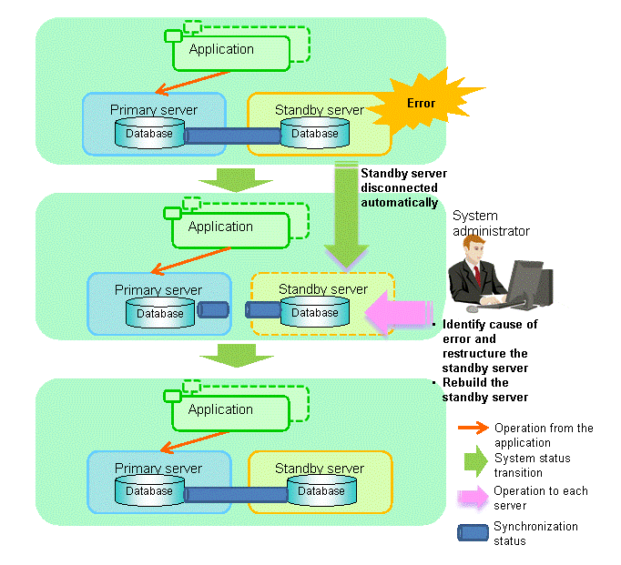

This section explains the operations when the server has started degrading after a disconnection has occurred.
Note
After a disconnection has occurred as a result of an abnormality on the standby server, the database will not have a multiplexed configuration until the standby server is rebuilt. Remove the cause of the error as quickly as possible, and then rebuild the standby server.
If the disconnection occurred and the server has started degrading, perform the following operations to recover the standby server and revert it to its original state:
The flow of these operations is shown in the figure below.
Figure 4.2 Flow of operations

Perform the recovery according to the following procedure:
Execute the mc_ctl command in stop mode for the standby server on which the error occurred.
Example)
> mc_ctl stop -M D:\mcdir\inst1
This also stops the instance that is required to perform the recovery.
Note
If the instance does not stop, refer to "Actions in Response to Failure to Stop an Instance" in the Operation Guide, and then stop the instance.
Then, specify the -e option in the above command to forcibly stop Mirroring Controller.
Copy the files in the Mirroring Controller management directory from the backup data, and then perform the recovery.
Refer to the event log of the primary server and the standby server to identify the cause of the error, and then perform recovery.
Execute the pg_basebackup command to perform recovery by synchronizing data in the primary server with the standby server.
Example)
> pg_basebackup -D D:\database\inst1 -X fetch --waldir=E:\transaction\inst1 --progress --verbose -R --dbname="application_name=standbyServerName" -h primaryServerHostName -p primaryServerPortNumber
See
This recovery procedure is the same as the procedure for setting up the standby server.
Refer to "2.5.2 Creating, Setting, and Registering the Standby Server Instance", and then perform the recovery.
Start the Mirroring Controller and the instance of the standby server, and rebuild the standby server.
As the instance administrator user, execute the mc_ctl command in start mode.
Example)
> mc_ctl start -M D:\mcdir\inst1
As the instance administrator user, execute the mc_ctl command in start mode with the -F option specified.
Example)
> mc_ctl start -M D:\mcdir\inst1 -F
Point
After Mirroring Controller is started, automatic switch/disconnection can be enabled or disabled using the enable-failover or disable-failover mode of the mc_ctl command.